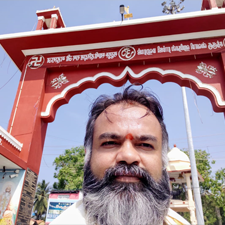
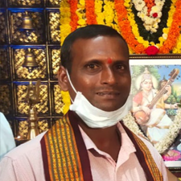

Cosmos has a say on human race through an sattvic mystical medium through the language of astrology.
While astronomy is understood and comprehended by all, astrology mystically answers all the happenings though unquantifiable. In Modern Science the difference between Physics and Quantum Physics holds as an good example. While Astronomy the study of Universe holds an good example for Physics. Astrology on the other hand holds a very good example for Quantum Physics. To comprehend Astrology one needs to have an extraordinary will power, intelligence more than everything spirituality along with past life's good karma. Some of the great seers in the past through their extrasensory abilities developed by perseverance and learning from the conversation of Shiva teaching Parvathi the science of Astrology and other similar such happenings put down through Guru Shishya lineage. Of this only a little has reached our generation due to the nature of Kaliyuga which was seen by our seers then only. When in this Kaliyuga we still explore this science everyday in the Indian as well as International Community we find lot of things which are now explained by science had been already been there explored in the texts of astrology. Astrology needs to be decoded to unearth precious jewels of knowledge which can then be acknowledged by science, which is now being done vice versa.
23 years of experience | Accurate Predictions | Affordable Cost
Property Vehicle Purchase
Kaal Sarp Dosh Analysis
Muhurat (Electional)
Sade-Sati
Manglik
Remedial
Speculation
Success
Travel
Health
Marriage
Education

Finance
Business
Career
ಅಷ್ಟಮಂಗಲ ಪ್ರಶ್ನೆ, ಸ್ವರ್ಣ ಯಕ್ಷ ಪ್ರಶ್ನೆ, ತಾಂಬೂಲ ಪ್ರಶ್ನೆ, ಆರೂಢ ಪ್ರಶ್ನೆ, ಮಂದಿರ ನಿರ್ಮಾಣ / ವಾಸ್ತು, ಜಾತಕ. ಎಲ್ಲಾ ತರಹದ ಪೂಜೆ, ಯಜ್ಣ ಯಾಗಾದಿಗಳನ್ನು ವಿಧಿವತ್ತಾಗಿ ಮಾಡಲಾಗುವುದು.
ಕಲ್ಲಿನ ಮತ್ತು ಪಂಚಲೋಹದ ಮೂರ್ತಿ, ನಾಗನ ಕಲ್ಲು, ದೇವಸ್ಥಾನ ಮತ್ತು ದೈವಸ್ಥಾನದ ಗರ್ಭಗುಡಿ ಮತ್ತು ಮನೆಯ ನಕ್ಷೆಯನ್ನು ವಾಸ್ತು ಪ್ರಕಾರವಾಗಿ ಮಾಡಿಕೊಡಲಾಗುವುದು.
ಎಲ್ಲಾ ತರಹದ ಪೂಜೆಗಳಿಗೆ ಹಾಲ್ ನ ವ್ಯವಸ್ಥೆ ಇದೆ.
He is very knowledgeable. Accurately says about the past. Very positively gives direction to the future. That gave me immense confidence to take my life decisions. He gives simple solution to any kind of complicated problems. He does make me feel life is easy whenever I discuss with him. I can rest assured and peaceful under his guidance. Thank You very much for being with me.
Mangalore
I have met many astrologers in my lifetime. But after consulting you, I realised astrology in true sense. Whatever you predicted about me my son and my husband came true and helped me during disturbed time. You are perfect scientific astrologer.
Kundapura
I have seen many astrologers but Kiran Rao is expert in astrology. His medical astrology is perfect and his remedies are very effective. He is expert in palm reading and face reading.
Manipal
According to me the best astrologer in coastal karnataka, fully satisfied.

Malpe
I had my personal family problem not going well.finance problem stress problem sickness I was fed up with eating medicines I was knowing one of my astrologer whose name was Mr. Kiran Bhat. I explained all my problem with kiran Bhat in manipal He saw my hand & told there is some problem in my family one lady is their she is jealous with me so she had given some medicine in my food without knowing me I asked Kiran Bhat what is the solution he requested I will remove medicine I agreed after that I felt better now I have no problem Kiran Bhat didn't charge me anything for this I always advice my friend if they have some problem I refer kiran bhat.
Mumbai
This is coming from a person who used to never believe in Astrology or Horoscope. But after talking to Kiran sir, my thought process has completely changed. He is not like any other Horoscope reader. He understands your situation and talks everything practically. Never uses God to scare you, but makes you believe in Positive Energy around you and trust in God. He has helped me to understand how to attaract positivity with simple prayers. A down to earth and a very Humble person. This is Kiran sir for you. His way of talking it self will give you positive vibes. Everytime I have spoken to him he has been very patient and calm and helped me overcome lot of situations in life. He is a true to his words.
Bengaluru
Very nice person predictions are superb he knows point to point everything in astrology I have come through many astrologers who are fake just for making money.But this person doesn't demand money. First even I didn't believe him but when the prediction came true I was surprised you can visit him.
J.P. Nagar Bangalore
Kiran Rao Is a devotee of Lord Shiva, a keen observer and a honest person. Understands and cares about other people’s problems. But really Very busy person... Treats everyone equally, and tries to solve their problems.
Udupi
I have met this guy nice and polite he understands people's problems and has a keen sense in tackling problems very accurate predictions he nicely explains the problems and gives a very useful remedy.
Udupi
Kiran is not only astrology he possesses great spiritual qualities with accurate predictions , he has reached out to me as a friend in times of great need, and supported me when I needed it most. Vastu, Numerology, Pooja, Homa, He is a truly gifted person and I highly recommend to someone who is looking for answers to tough questions in your life.
Bangalore
One of top astrologer around I approached him many years back after seeing my horoscope he predicted what will be my life. Until now the same things are happening in my life perfect prediction super all this person predicts is purely scientific

Mudbidri
One of the top astrologers in Udupi very perfect in predicting horoscope what this person told about my horoscope all things came to be true in my life one of the most knowledgeable astrologers in Udupi reasonable rate and small remedies also medical astrology is perfect if you want the real knowledge of horoscope you can visit him
Perdoor
One of the best astrologer who I have met perfect prediction well known for his knowledge in astrology keen sense of humour known for small remedies
Manipal
I have gone to this astrologer many times is one of the perfect and scientific astrologers in Udupi, known for his perfect remedies he had helped me many times when I was in trouble in abroad what he told everything came to be true so I blindly believe him is one of the greatest astrologers blindly anyone can visit him.
Qatar
I have gone to many places all over India I have met many astrologer and many spiritual people I met this person before 10 years back and ask about my business my house vastu he predicted very nicely about me about my house everything first I didn't believe this person because many astrologers I have seen. But what this predicted came to be true I was astonished. He is very accurate in predicting horoscope, prashna maargam, he also predicted about my daughter which he told she will be met with an accident It also came to be true, and his remedies are very small he always gives homework which is very essential in our life.
Naloor, thirthahalli
ಜ್ಯೋತಿಷ್ಯ ತುಂಬಾ ಚೆನ್ನಾಗಿ ತಿಳಿದಿದ್ದಾರೆ ತುಂಬಾ ಚೆನ್ನಾಗಿ ಎಲ್ಲ ರೀತಿಯ ಸಮಸ್ಯೆಗಳಿಗೆ ಪರಿಹಾರ ಹೇಳುತ್ತಾರೆ ನಾನು ತುಂಬ ಜನರನ್ನು ಇವರ ಹತ್ತಿರ ಕಳುಹಿಸಿದ್ದೇನೆ ಎಲ್ಲರ ಕಷ್ಟ ಪರಿಹಾರ ಅಗಿದೆ ಇವರ ಪರಿಹಾರಗಳು ತುಂಬಾ ಸುಲಭ.
ಉಡುಪಿ
ತುಂಬಾ ಅನುಭವಸ್ಥ ಜ್ಯೋತಿಷ್ಯರು ಜಾತಕ ಹಸ್ತ ಮುದ್ರಿಕೆ, ಮುಖ ಲಕ್ಷಣ ಜ್ಯೋತಿಷ್ಯದಲ್ಲಿ ತುಂಬಾ ಪ್ರವೀಣರು ನಾನು ತುಂಬ ಜನರನ್ನು ಇವರ ಬಳಿ ಕರೆದುಕೊಂಡು ಹೋಗಿದ್ದೇನೆ ಎಲ್ಲರ ಭವಿಷ್ಯ ತುಂಬಾ ಸರಿಯಾಗಿ ಹೇಳಿದ್ದಾರೆ ನನ್ನ ಬಗ್ಗೆ ಹೇಳಿದ ಎಲ್ಲ ವಿಷಯಗಳು ಸರಿಯಾಗಿದೆ ಪ್ರೊಫೆಸರ್ ಕಿರಣ್ ಕುಮಾರ್ ಅವರಿಗೆ ತುಂಬಾ ಧನ್ಯವಾದಗಳು ಸತ್ಯವಾಗಿ ನಿಖರವಾಗಿ ಪ್ರಶ್ನೆ ಕೇಳಲು ಇವರ ಹತ್ತಿರ ಹೋಗಬಹುದು.
ಮಣಿಪಾಲ
ಜ್ಯೋತಿಷ್ಯ ಶಾಸ್ತ್ರ ಮತ್ತು ವಾಸ್ತು ಶಾಸ್ತ್ರದಲ್ಲಿ ಪರಿಣತಿ ಮತ್ತು ಅಪಾರ ಅನುಭವ ಹೊಂದಿರುವ ನನ್ನ ಆತ್ಮೀಯ ಮಿತ್ರರಾದ ಮೂಡಬಿದ್ರಿ ಮೂಲದ,ಪ್ರಸಕ್ತ ಮಣಿಪಾಲದಲ್ಲಿ ತನ್ನ ಕಾರ್ಯಕ್ಷೇತ್ರವನ್ನು ಕೇಂದ್ರವಾಗಿಸಿಕೊಂಡಿರುವ ಶ್ರೀಯುತ ಕಿರಣ್ ಕುಮಾರ್ ರವರು ಸಮಸ್ಯೆ ಅರಸಿ ತಮ್ಮೆಡೆಗೆ ಬಂದ ನೊಂದ ಜನರಿಗೆ ದಾರಿ ದೀಪವಾಗಿದ್ದಾರೆ ಎಂದು ಹೇಳಲು ನನಗೆ ಹೆಮ್ಮೆಯೆನಿಸುತ್ತದೆ. ಜ್ಯೋತಿಷ್ಯ ಶಾಸ್ತ್ರದ ವಿವಿಧ ಅಂಗಗಳಲ್ಲಿಯೂ ಅಪಾರ ಜ್ಞಾನ ಹೊಂದಿರುವ ಇವರು ಸರಳವಾಗಿ ಸಮಸ್ಯೆಗಳನ್ನು ಪರಿಹರಿಸಿದ ಅದೆಷ್ಟೋ ಉದಾಹರಣೆಗಳು ನಮ್ಮ ಮುಂದಿವೆ. ಇವರ ನೇತೃತ್ವದಲ್ಲಿ ಅದೆಷ್ಟೋ ಸುಪ್ತವಾಗಿದ್ದ ದೈವೀ ಶಕ್ತಿಗಳು ಗೋಚಾರಕ್ಕೆ ಬಂದು ನಂತರ ಅವುಗಳ ಪ್ರತಿಷ್ಠಾ ಕಾರ್ಯಕ್ರಮಗಳು ವಿಧಿ ವತ್ತಾಗಿ ನಡೆದದ್ದಿದೆ.ಇಂತಹ ಕುಟುಂಬಗಳು ನಂತರ ನೆಮ್ಮದಿಯ ನಿಟ್ಟುಸಿರುಬಿಟ್ಟದಿದೆ. ಆರಾಧ್ಯ ದೇವರಾದ ಪರಶಿವನ ಪರಮಭಕ್ತರಾದ ಇವರು .ದೈವ -ದೇವರ ಒಲುಮೆ ಇವರಿಗೆ ವರದಾಯಕವಾದ್ದರಿಂದಲೇ ಜನರ ಸಮಸ್ಯೆ ಪರಿಹಾರಕ್ಕೆ ಇದುವೇ ಅವರಿಗೆ ಶಕ್ತಿಯಾಗಿದೆ.ವೈಜ್ಞಾನಿಕ ಮತ್ತು ಪಾರಂಪರಾಗತ ಜ್ಯೋತಿಷ್ಯ ಶಾಸ್ತ್ರದ ಅನುಭವೀ ಶಕ್ತಿಯಾಗಿರುವ ಶ್ರೀ ಕಿರಣ್ ಕುಮಾರ್ ರವರು ನಮ್ಮ ರಾಜ್ಯಾದ್ಯಂತ ವಿವಿಧ ಅಷ್ಟ ಮಂಗಳ ಪ್ರಶ್ನಾ ಕಾರ್ಯಕ್ರಮಗಳಲ್ಲಿ ದೈವಜ್ಞರಾಗಿ ಭಾಗಿಯಾಗಿ ಮಣಿಪಾಲದ ಖ್ಯಾತ ಜ್ಯೋತಿಷ್ಯರಾಗಿ ತನ್ಮೂಲಕ ತಮ್ಮ ಕೀರ್ತಿಯನ್ನು ಬೆಳಗಿಸಿದ್ದಾರೆ. ಎಲ್ಲರೊಂದಿಗೂ ಸ್ನೇಹಮಯವಾಗಿ ನಿಗರ್ವಿತನದಿಂದ ಬೆರೆಯುವ ಇವರು ಇನ್ನೂ ಮುಂದೆಯೂ ಇದೆ ರೀತಿಯಾಗಿ ಬೆಳಗಲಿ,ಅವರ ಜ್ಯೋತಿಷ್ಯ ಮತ್ತು ವಾಸ್ತು ಶಾಸ್ತ್ರ ಸೇವೆ ಇನ್ನಷ್ಟು ಮತ್ತಷ್ಟು ರೀತಿಯಲ್ಲಿ ಸಮಾಜಕ್ಕೆ ದೊರಕಿ ನೆರವಾಗಲಿ ಎಂದು ಶುಭ ಹಾರೈಸುತ್ತಾ ಉತ್ತಮ ಆರೋಗ್ಯ ಮತ್ತು ಧೀರ್ಘಾಯುಷ್ಯವನ್ನು ಹಾರಸುತ್ತೇನೆ.
ಮೂಡಬಿದ್ರಿ-574227
>ಕಿರಣಕುಮಾರ ಮಣಿಪಾಲ ಒಬ್ಬರು ಉತ್ತಮ ಜೋತಿಷಿಗಳು.ಜ್ಯೋತಿಷ್ಯದ ಕುರಿತು ಅವರ ಆಸಕ್ತಿ ಅಪಾರ.ನನ್ನಲ್ಲಿಗೆ ಕಲಿಯಲು ಬರುವಾಗ ಎರಡೂವರೆ ಗಂಟೆ ಪ್ರಯಾಣಮಾಡಿಯೂ 8ಗಂಟೆಗೆ ನಮ್ಮಲ್ಲಿಗೆ ತಲಪುತ್ತಿದ್ದರು.ಕರಾವಳಿಯ ಭೂತಗಳ ಬಗೆಗೆ ಅಧಿಕೃತವಾಗಿ ಮಾತನಾಡಬಲ್ಲರು.ತರ್ಕಬದ್ದ ಚಿಂತನಾಶೈಲಿ ಸರಳ ಪರಿಹಾರಗಳಿಂದ ಅವರು ಜನಮಾನಸಕ್ಕೆ ನಿಕಟವಾಗಿದ್ದಾರೆ.ಅವರಿಗೆ ಶುಭಹಾರೈಕೆಗಳು.
ಕಾಸರಗೋಡು
ನಾನು ತುಂಬಾ ಜ್ಯೋತಿಷ್ಯರ ಬಳಿ ಹೋಗಿದ್ದೆ ಇವರು ವಿಮರ್ಶೆ ಮಾಡಿದ ಜಾತಕ ಹಾಗೂ ಪ್ರಶ್ನೆ ತುಂಬಾ ಚಿಂತನೆಯ ತುಂಬಾ ಅನುಭವಸ್ಥರು ನನ್ನ ಜೀವನದಲ್ಲಿ ಏನೆಲ್ಲ ಹೇಳಿದರೆ ಅದು ಇವತ್ತಿಗೆ ಸತ್ಯವಾಗಿ ನಡೆದಿದೆ. ಪರಿಹಾರಗಳು ತುಂಬ ಸುಲಭ 20 ವರ್ಷದಿಂದ ನನಗೆ ಅವರ ಪರಿಚಯ 20 ವರ್ಷಗಳಿಂದ ಏನೆಲ್ಲ ಹೇಳಿದರೆ ನನ್ನ ಜಾತಕ ಮತ್ತೆ ಪ್ರಶ್ನೆ ಎಲ್ಲವೂ ಸತ್ಯ ಆಗಿ ನಡೆದುಬಂದಿದೆ ಇವರ ಮೇಲೆ ಅಪಾರವಾದ ನಂಬಿಕೆ ಇದೆ ನಿಜವಾದ ಉತ್ತರ ಬೇಕಿದ್ದರೆ ಇವರ ಹತ್ತಿರ ಹೋಗಬೇಕು ತುಂಬಾ ವಿಮರ್ಶೆ ಮಾಡಿ ಜ್ಯೋತಿಷ್ಯ ಹೇಳುತ್ತಾರೆ ನಾನು ಕಂಡಂತ ವಿಶೇಷ ವ್ಯಕ್ತಿತ್ವ
ಶಾಂತಿವನ ಕುಕ್ಕೆಹಳ್ಳಿ
ನಾನು ನನ್ನ ಮದುವೆಯ ವಿಷಯದಲ್ಲಿ ಇವರ ಬಳಿ ಹೋಗಿದ್ದೆ ನನ್ನ ಜಾತಕ ವಿಮರ್ಶೆ ಮಾಡಿ ಒಳ್ಳೆಯ ಸಲಹೆಯನ್ನು ಕೊಟ್ಟರು ನಾನು ತುಂಬಾ ಜ್ಯೋತಿಷ್ಯರ ಬಳಿ ಹೋಗಿದ್ದೆ ಆದರೆ ತುಂಬಾ ಸರಿಯಾಗಿ ಉತ್ತರವನ್ನು ಕೊಟ್ಟವರು ಇವರೇ ತುಂಬಾ ವಿಜ್ಞಾನದ ಪ್ರಕಾರ ಉತ್ತರ ಕೊಡುವ ಜ್ಯೋತಿಷ್ಯರು. ನಮಗೆ ಯಾವುದೇ ತರಹದ ಹೆದರಿಕೆ ಹುಟ್ಟಿಸುದಿಲ್ಲ ಇದ್ದದ್ದನ್ನು ಇದ್ದ ಹಾಗೆ ಹೇಳುತ್ತಾರೆ ಹೇಳಿದ ವಾಕ್ಯ ಎಲ್ಲ ಪರಮಸತ್ಯ ಅದರಲ್ಲಿ ಎರಡು ಮಾತೇ ಇಲ್ಲ ನನಗೆ ಮತ್ತು ನನ್ನ ಫ್ಯಾಮಿಲಿಗೆ ತುಂಬಾ ಖುಷಿಯಾಗಿದೆ ತುಂಬ ಜನರನ್ನು ಇವರ ಹತ್ತಿರ ಕಳುಹಿಸಿದ್ದೇನೆ ಎಲ್ಲವೂ ಹೇಳಿದ್ದು ಸರಿಯಾಗಿದೆ.
ಸರಸ್ವತಿ ಶಿಲ್ಪಕಲಾ ಕೇಂದ್ರ, ಕಾರ್ಕಳ
ನಾನು ಇವರ ಬಳಿ ತುಂಬ ಸಲ ಹೋಗಿದ್ದೇನೆ ಜ್ಯೋತಿಷ್ಯ ಮತ್ತು ವಾಸ್ತು ಹೇಳುವುದರಲ್ಲಿ ತುಂಬಾ ಪರಿಣಿತರು ಇದ್ದದನ್ನು ಇದ್ದ ಹಾಗೆ ಹೇಳುತ್ತಾರೆ ನಮ್ಮ ಮನೆಯ ವಿಷಯದಲ್ಲಿ ಹೇಳಿದ್ದು ಎಲ್ಲಾ ನಿಜವಾಗಿದೆ ತುಂಬಾ ನಿಖರವಾದ ಪ್ರೆದಿಕ್ಷನ್ ಸತ್ಯವನ್ನು ತಿಳಿಯಬೇಕಾದರೆ ಇವರ ಹತ್ತಿರ ಹೋಗ ಬೇಕು.
ಮುಂಬೈ
Aroor Post & Village Dasabettu, Alunje, Bramavara Taluk, Udupi
© Copyright Aroora Mantradevatha Sannidhanam.
visitors counter
Designed By Everest Commerce Solutions
visitors counter